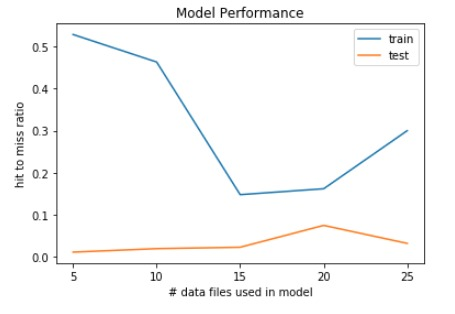

Results
Evaluating the model
Domain knowledge is certainly useful for an initial evaluation of the model. Do our playlist generation results make sense or do they look random? For example, if the generator is seeded with jazz songs we should expect to get back a playlist of jazz. Or if we seed with several tracks sharing some sort of common theme (e.g. Halloween) we should expect the playlist to contain new songs that also share this theme. Our model certainly passes this initial sanity check, but we need a more ridges metric from evaluating the model's performance.
We decided to see how well our model could predict tracks occurring in playlists it hadn't seen before. The hit/miss prediction ratio would the give us some indication of how well the playlist making behavior of Spotify users were being modeled. The ratio derived from the previously unseen test playlists could also be compared to predictions made on train playlists which were used in constructing the model. We would expect the model to perform better on familiar train playlists than on the test playlists. We could also explore how model size, that is, how much data the model was built with, affects the model's performance. The assumption here is that more data would lead to better performance on the test data. Initially the idea had been to make predictions by attempting to "replace" a missing track. We would seed the generator with an entire playlist leaving out a sing track and see if the generator would give use back the song that had been removed. The results were very poor, even on playlists the model had seen before. In the end we were getting so few hits that there wasn't enough of a signal to make this a reliable metric. Instead we tried reversing our approach: take an existing playlist, select a track from it and to seed the generator; then count the hits and misses between the new playlist and the original. This meant sacrificing any measure of how well our model does seeding with multiple songs but in the end it proved necessary as this method actually gave us values we could interpret.The final problem with the scoring metric involved the time required to generate and compare playlists. Making a single playlist is quick enough but generating hundreds and hundreds forced us to use a very small test and train sample for evaluation. This results in very high variance in our scores. Ideally we would have made dozens if not hundreds of such evaluations and averaged them to reduce this variance but there just wasn't enough time.
 As we assumed, the model does do much better on the train than on the test playlists. Oddly we see a bit of a dip in train performance as model size increase while test performance slowly rises. One explanation for the dip is the variance in our train/test sample. We may have just not taken a large or representative enough sample to evaluate our model on. Another thing to consider is the fact that, as our model grows, so do the total number of possible tracks. That is, as model size increases potential hits get crowded out by potential misses. Taking this into consideration we might conclude that, despite its overall low hit/miss ratio on test, the model is actually learning something it can generalize to unseen cases. For, if this were not the case, we would expect test performance to steadily decrease as model size increases because generating a hit far less like the more potential songs the model has to choose from.Going Forward
As our EDA has shown, a small percentage of songs represent the majority of all playlist content. This could lead out model to erroneously infer that certain songs are ‘similar to most other songs’ when in reality it is just its overall popularity that causes it to appear in so many playlists, regardless of the other songs already in said playlist. One method to control for this would be to alter our co-occurrence matrix so that each index includes not the co-occurrence count but what is known as a ‘jaccard index’. The Jaccard Index can be seen as a better representation of similarity than simple co-occurrence counts. It can be derived from the COM by dividing the value at index ij (the co-occurrence or ‘intersection’ of tracks i and j) by the ‘union’ of tracks i and j, that is, the sum of the total occurrences in the dataset of both tracks i and j. This intersection over union idea also lies behind tf-idf (text frequency, inverse document frequency) representations in natural language processing.
Our model currently calculates the union via lookups in a counter dictionary and divides the co-occurrence counts by it on the fly as it generates each playlist. This slows down playlist generation and it would probably be best to derive an entire Jaccard matrix from the COM from the outset, but this has proved painfully slow. There must be a better way!